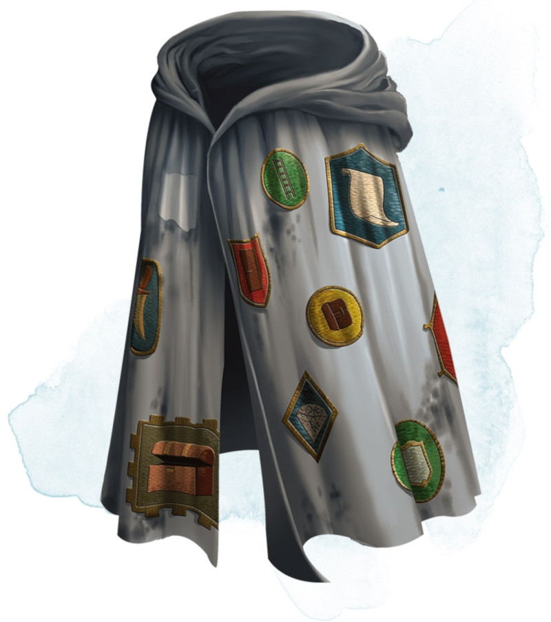

Robe of Useful Items
[ Robe de camelot ]
Wondrous item, uncommon
This robe has cloth patches of various shapes and colors covering it. While wearing the robe, you can use an action to detach one of the patches, causing it to become the object or creature it represents. Once the last patch is removed, the robe becomes an ordinary garment. The robe has two of each of the following patches:
• Dagger
• Bullseye lantern (filled and lit)
• Steel mirror
• 10-foot pole
• Hempen rope (50 feet, coiled)
• Sack
In addition, the robe has 4d4 other patches. The DM chooses the patches or determines them randomly.
• Dagger
• Bullseye lantern (filled and lit)
• Steel mirror
• 10-foot pole
• Hempen rope (50 feet, coiled)
• Sack
In addition, the robe has 4d4 other patches. The DM chooses the patches or determines them randomly.
| d100 | Patch |
|---|---|
| 01-08 | Bag of 100 gp |
| 09-15 | Silver coffer (1 foot long, 6 inches wide and deep) worth 500 gp |
| 16-22 | Iron door (up to 10 feet wide and 10 feet high, barred on one side of your choice), which you can place in an opening you can reach; it conforms to fit the opening, attaching and hinging itself |
| 23-30 | 10 gems worth 100 gp each |
| 31-44 | Wooden ladder (24 feet long) |
| 45-51 | A riding horse with saddle bags |
| 52-59 | Pit (a cube 10 feet on a side), which you can place on the ground within 10 feet of you |
| 60-68 | 4 potions of healing |
| 69-75 | Rowboat (12 feet long) |
| 76-83 | Spell scroll containing one spell of 1st to 3rd level |
| 84-90 | 2 mastiffs |
| 91-96 | Window (2 feet by 4 feet, up to 2 feet deep), which you can place on a vertical surface you can reach |
| 97-00 | Portable ram |
Dungeon Master´s Guide (SRD)
